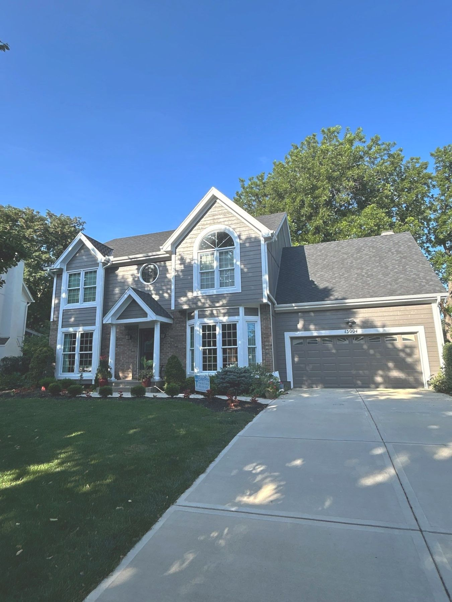
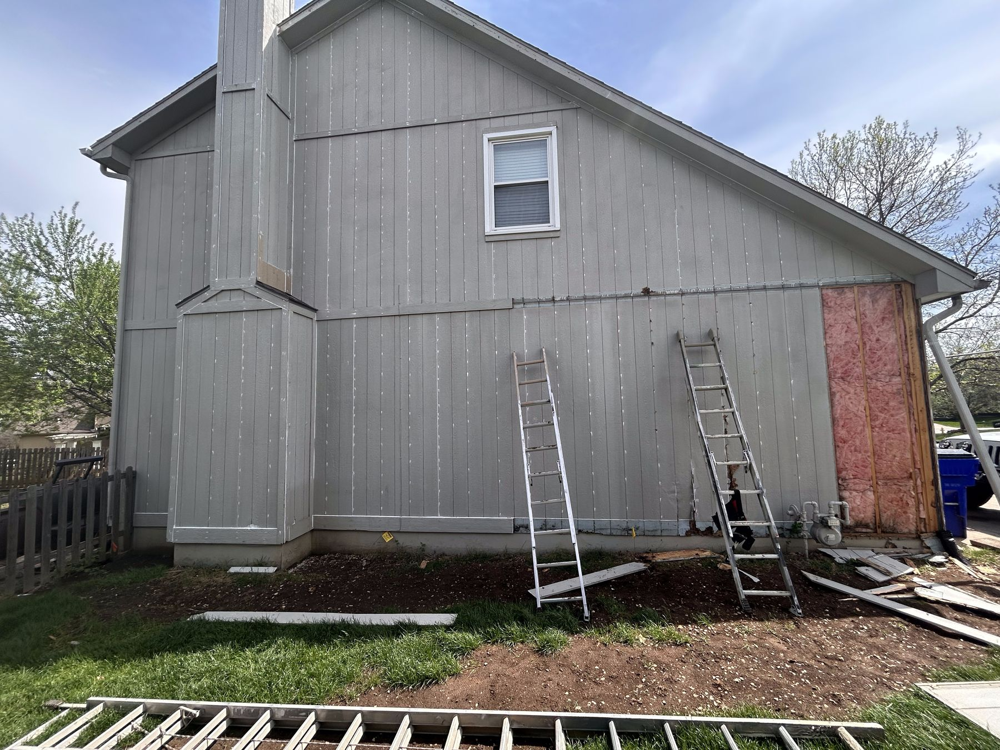
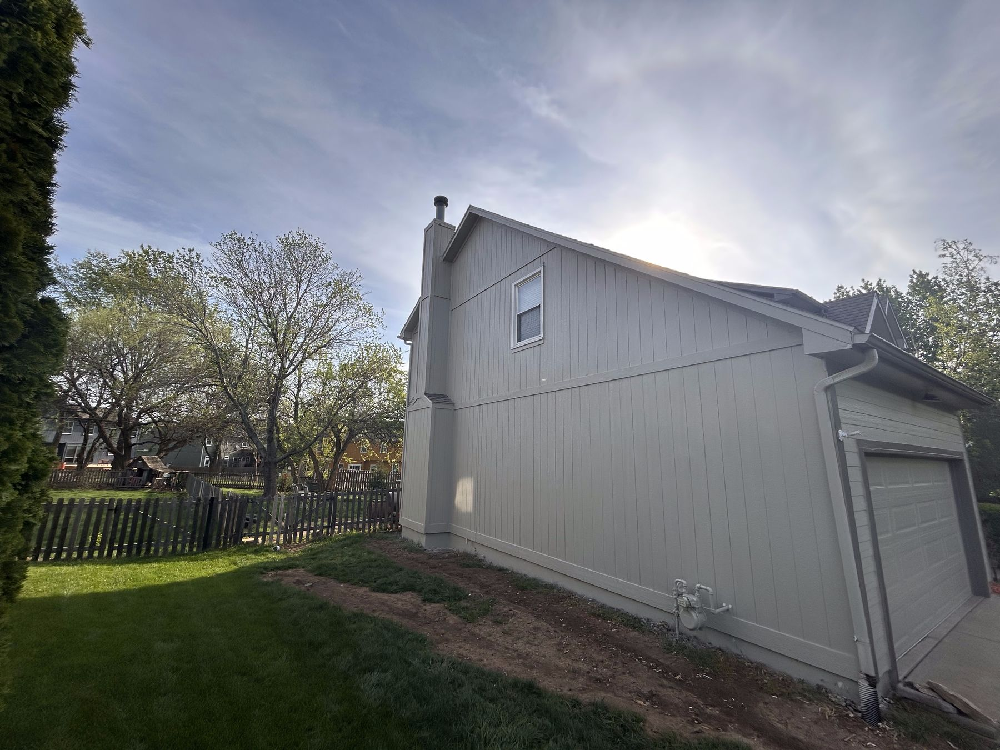
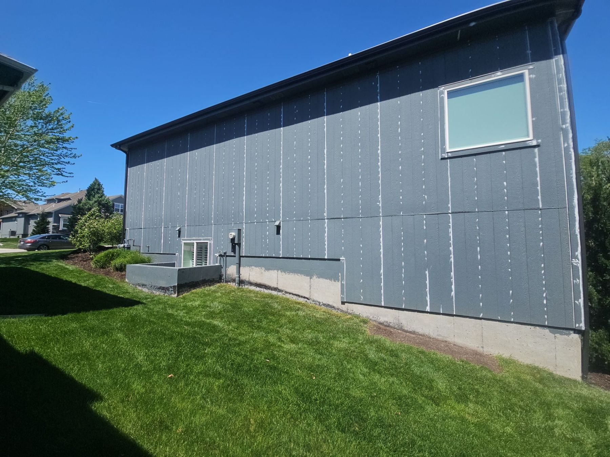
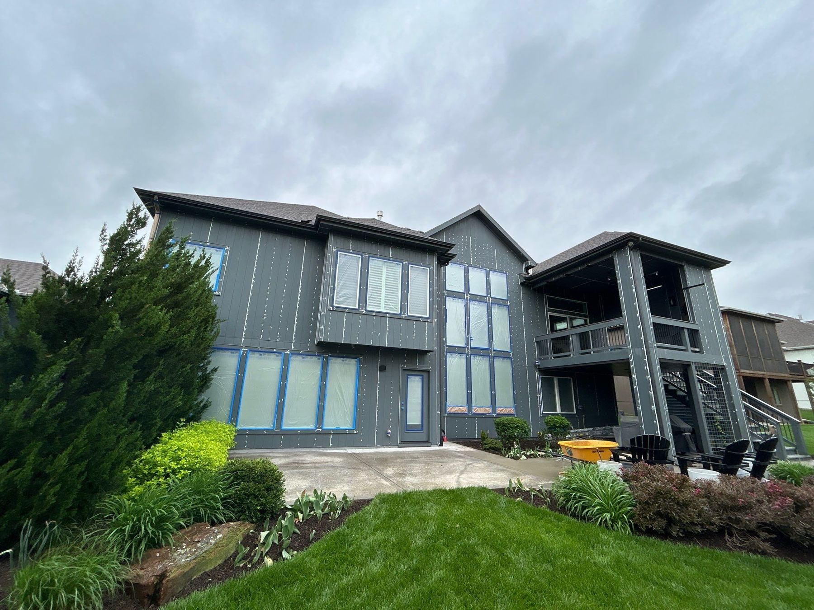

Built to survive KC summers and winters — because we fix what's under the paint before we paint it.
Get Your Free EstimateKansas City weather is brutal on exteriors — freeze-thaw cycles, summer sun, ice, and humidity work on your siding year-round. When paint peels in three years, it's almost never the paint's fault. It's the prep that was skipped underneath it.
On every EverPro exterior, the crew doesn't touch a brush until the surface is actually ready:
We use Sherwin-Williams exterior products matched to your home and give you options across their lines during the estimate, so you choose the durability level that fits.



Painting over rotten wood is putting a bandage on a broken bone. During your walkthrough, Ethan looks for soft trim, failing soffits, and swollen boards — and tells you honestly what needs repair versus what just needs paint. Repairs get handled before the finish goes on, so you're not paying twice.
Waiting has a real cost: cracked, exposed paint lets moisture into your siding through every Kansas City winter, and what would have been a paint job becomes a repair job by spring.
Schedule a Free WalkthroughAsk us what matters most on an exterior and the answer is always the same: the prep. Paint is the finish line — prep is the race. Here's what happens on your home before a finish coat ever goes on:
Look closely at the photos — every white dot is a nail hole or seam that's been individually caulked by hand. That's hours of work most bids quietly skip, and it's the single biggest reason our jobs still look right in year ten while cheap jobs fail in year three.


Every estimate includes a walkthrough of Sherwin-Williams product tiers, so you can match the paint to your home, your plans, and your budget — with honest guidance on where the upgrade is worth it.
A quality Sherwin-Williams exterior paint that delivers a clean, professional result at the friendliest price point. A solid choice when budget leads the decision or you're preparing a home for sale.
A step up in resin quality and durability — richer color retention and stronger resistance to KC's freeze-thaw swings. The sweet spot for most homeowners planning to stay put.
Sherwin-Williams' top-tier exterior coatings — maximum lifespan, fade resistance, and film build. This is what pushes a paint job toward the 15-year end of the range.
Not sure which fits? That's exactly what the walkthrough is for — Ethan explains the real-world difference on your siding, not a brochure, and helps you land on the tier that actually makes sense for your plans.
Need help with colors too? We consult on color selection as part of every project — palettes that suit your home's style, your neighborhood, and your HOA if you have one.
Talk Through Your Options
Roughly spring through fall. Once temperatures drop, paint won't cure properly no matter who applies it — that's chemistry, not salesmanship. The calendar fills fastest in late summer, so if you want your home done before winter, earlier is better.
8–15 years in KC's climate. Where your home lands in that range comes down to the prep — our standard on every job — and the paint quality you choose. We'll walk you through the product options during your estimate.
Most exteriors take a few days to a week depending on size and how much prep and repair the surfaces need. You'll have a clear timeline in your written quote before we start.
It depends on your home — size, stories, and above all the condition of the surfaces. Anyone quoting a price without walking your home is guessing. Read how we price every job, then get your real number with a free walkthrough.
Free walkthrough with the owner. Detailed written quote. A number that holds.
Request a Free EstimateOr call/text 913-210-1041